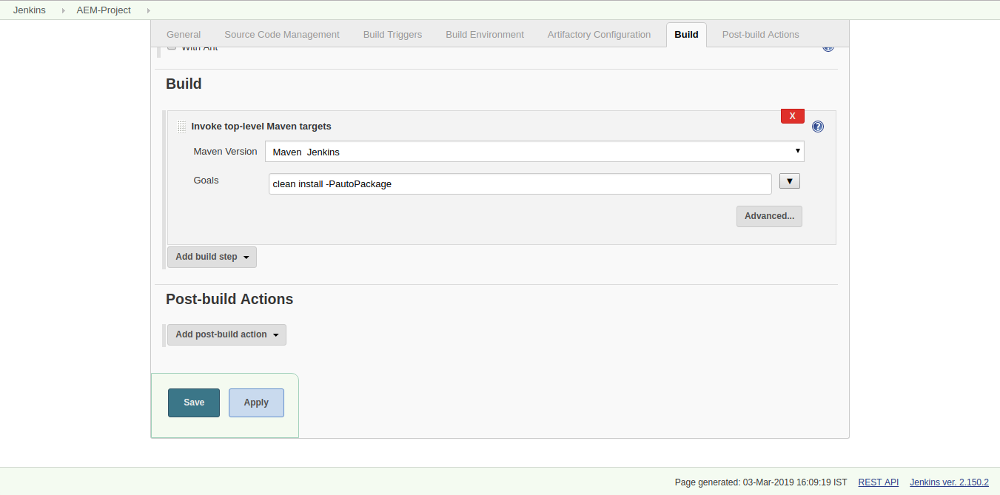

CI/CD setup for AEM
This article shows configuring a CI (continuous Integration) system for AEM with
- Artifactoy
- Jenkins
- Git
project setup and git repo
Create a maven project using AEM multi module archetype and push the file to a git repository
Jenkins setup
Configure the following in jenkins under Manage Jenkins > Global Tools Configuration and setup a pipeline to build the project- JDK
- Maven
- Artifactoy
JDK Setup
Maven Setup
Artifactory Setup
Setup Artifactory under Manage Jenkins > Configuration
Setup pipeline
- Create a new freestyle pipeline
- Configure git repo in jenkins project
- Configure build settings to build and deploy the project into AEM server given under configurations in POM.xml
- Trigger the build manually by clicking build now and viola! once the build succeeds it deploys to the AEM instance
